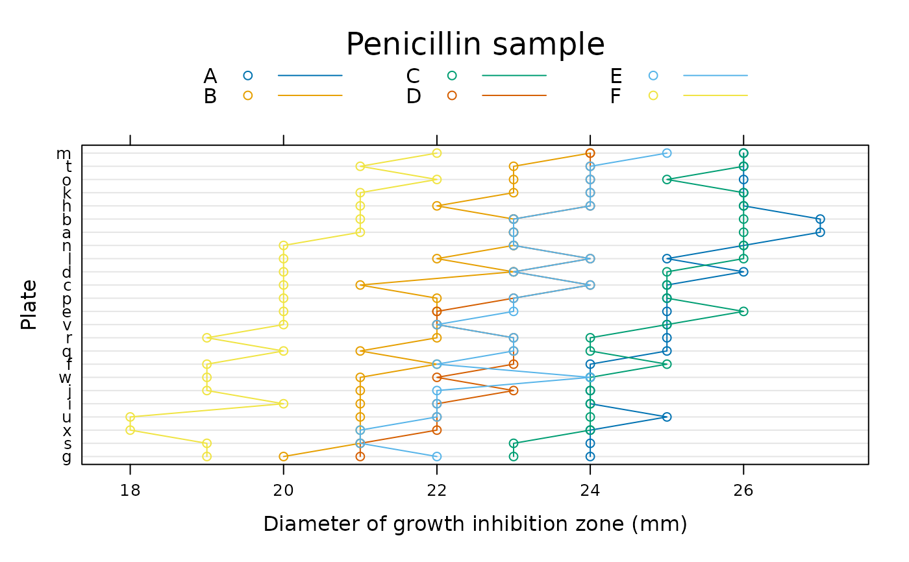
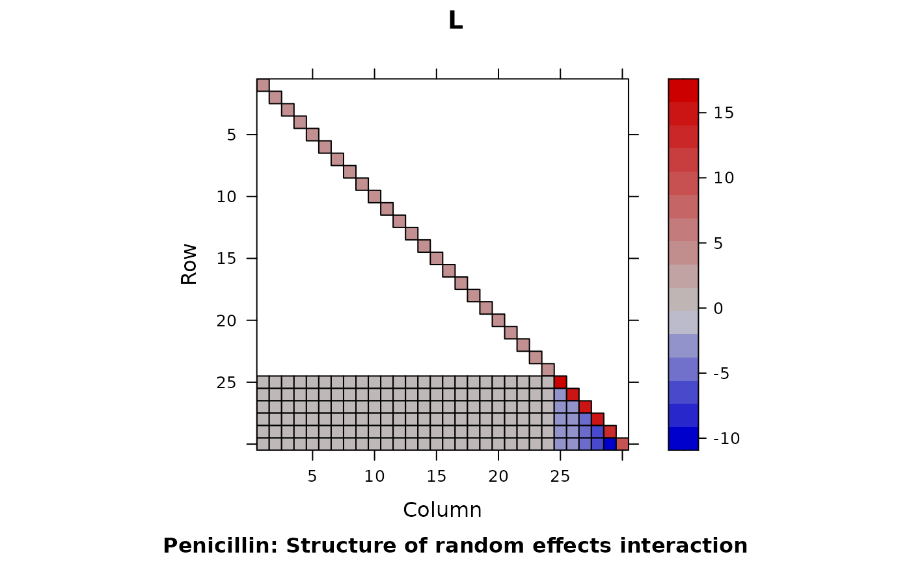

Variation in penicillin testing
Penicillin.RdSix samples of penicillin were tested using the B. subtilis plate method on each of 24 plates. The response is the diameter (mm) of the zone of inhibition of growth of the organism.
Format
A data frame with 144 observations on the following 3 variables.
diameterdiameter (mm) of the zone of inhibition of the growth of the organism.
plateassay plate. A factor with levels ‘a’ to ‘x’.
samplepenicillin sample. A factor with levels ‘A’ to ‘F’.
Source
O.L. Davies and P.L. Goldsmith (eds), Statistical Methods in Research and Production, 4th ed., Oliver and Boyd, (1972), section 6.6
Details
The data are described in Davies and Goldsmith (1972) as coming from an investigation to “assess the variability between samples of penicillin by the B. subtilis method. In this test method a bulk-inoculated nutrient agar medium is poured into a Petri dish of approximately 90 mm. diameter, known as a plate. When the medium has set, six small hollow cylinders or pots (about 4 mm. in diameter) are cemented onto the surface at equally spaced intervals. A few drops of the penicillin solutions to be compared are placed in the respective cylinders, and the whole plate is placed in an incubator for a given time. Penicillin diffuses from the pots into the agar, and this produces a clear circular zone of inhibition of growth of the organisms, which can be readily measured. The diameter of the zone is related in a known way to the concentration of penicillin in the solution.”
Examples
str(Penicillin)
#> 'data.frame': 144 obs. of 3 variables:
#> $ diameter: num 27 23 26 23 23 21 27 23 26 23 ...
#> $ plate : Factor w/ 24 levels "a","b","c","d",..: 1 1 1 1 1 1 2 2 2 2 ...
#> $ sample : Factor w/ 6 levels "A","B","C","D",..: 1 2 3 4 5 6 1 2 3 4 ...
require(lattice)
dotplot(reorder(plate, diameter) ~ diameter, Penicillin, groups = sample,
ylab = "Plate", xlab = "Diameter of growth inhibition zone (mm)",
type = c("p", "a"), auto.key = list(columns = 3, lines = TRUE,
title = "Penicillin sample"))

(fm1 <- lmer(diameter ~ (1|plate) + (1|sample), Penicillin))
#> Linear mixed model fit by REML ['lmerMod']
#> Formula: diameter ~ (1 | plate) + (1 | sample)
#> Data: Penicillin
#> REML criterion at convergence: 330.8606
#> Random effects:
#> Groups Name Std.Dev.
#> plate (Intercept) 0.8467
#> sample (Intercept) 1.9316
#> Residual 0.5499
#> Number of obs: 144, groups: plate, 24; sample, 6
#> Fixed Effects:
#> (Intercept)
#> 22.97
L <- getME(fm1, "L")
Matrix::image(L, main = "L",
sub = "Penicillin: Structure of random effects interaction")
